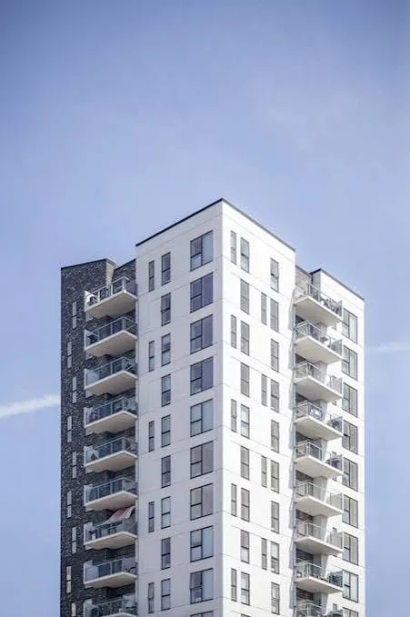
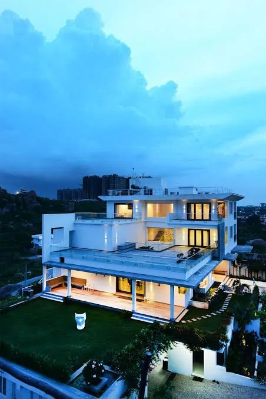
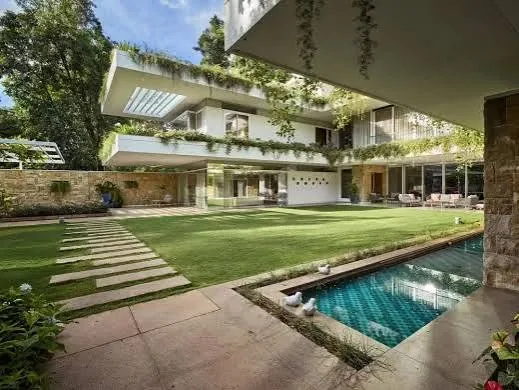
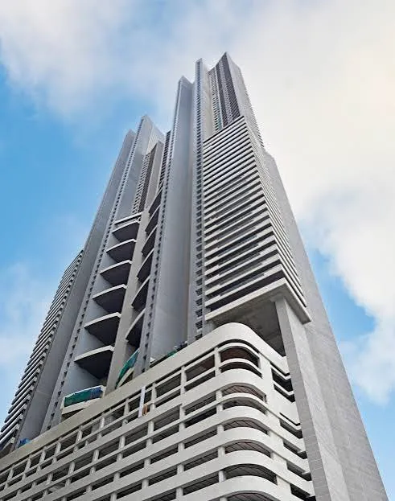
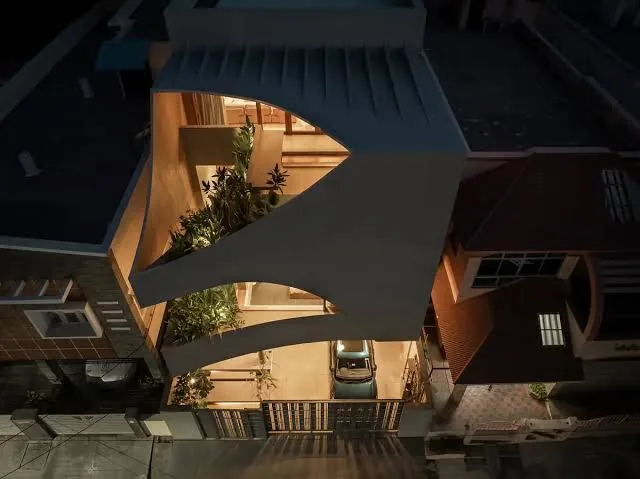

01 — Massing
One volume, stepped to the sun.
The tower steps back on the south face so every terrace is shaded by the slab above it between eleven and four.


Case study · Residential
A 180-home residential landmark in Gurugram, oriented to catch morning light in every kitchen and shade every balcony by four o'clock.
The developer came to us with a floor-area target and a plot on the wrong side of a highway — a parcel with noise on two edges and hard western sun on the third. Most proposals we saw simply rotated the tower and called it orientation.
We spent the first five weeks on the site, not the drawing board. Noise readings morning and evening. Shadow studies across twelve months. A soil report that changed the foundation strategy entirely — and saved eleven weeks on the programme.
The result is a single stepped volume around a shaded courtyard, with the noisiest elevation given over to circulation rather than bedrooms, and every living room opening east.
The tower steps back on the south face so every terrace is shaded by the slab above it between eleven and four.

A 40-metre planted court sits between the two wings, acting as the acoustic and social buffer for both.

Raft foundation, flat slabs and a repeating column grid let our own crews cycle formwork on a five-day floor.


Handed over on the day we said, with a snag list of eleven items.
One camera, fixed at the site gate, recording the same corner of the tower every Friday at seven in the morning.
Handed over · March 2026
Next project